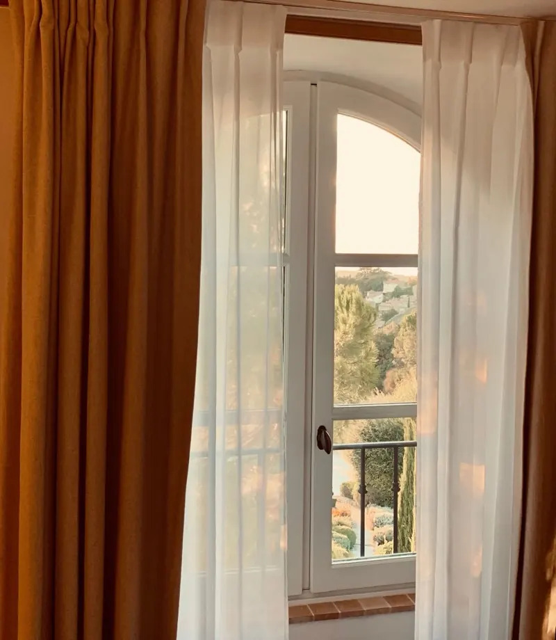
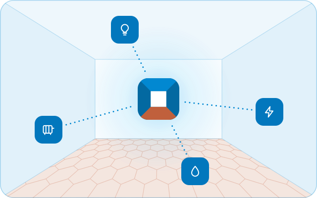

Diagnostic à domicile
Pour savoir ce qui est possible chez vous
50 €la visite
- Environ une heure chez vous
- Une page de compte rendu
- Une proposition d’installation avec son prix
Domotique à Marseille
J’installe chez vous, à Marseille, une application claire, pensée pour toute la famille et bien protégée. Elle réunit lumières, prises, capteurs et chauffage, même de marques différentes, et l’essentiel continue de marcher quand internet est coupé.

Un tableau de bord rangé pièce par pièce : lumières, chauffage et alertes au même endroit. Je le dessine avec vous, à votre goût.
De grandes tuiles lisibles, en français, sur téléphone, tablette ou ordinateur. Chaque personne a son propre compte.
Tout fonctionne sur un petit boîtier posé chez vous et à votre nom. Chaque compte est protégé par un mot de passe et un code à usage unique, et je règle les mises à jour et les sauvegardes.
Des objets de marques différentes, certifiés Matter ou Zigbee, ou qui fonctionnent en Wi-Fi : je vérifie les vôtres un par un.
Le principe
Vos appareils se relient à un petit boîtier, posé chez vous près de votre box internet. Lumières, chauffage, prises et capteurs, même de marques différentes, se retrouvent alors dans une seule application.
Le boîtier est acheté à votre nom et reste chez vous : c’est lui qui fait marcher l’essentiel, même quand internet est coupé.

Tarifs
Je viens d’abord voir votre logement, puis je vous envoie une proposition écrite avec son prix. Vous achetez le matériel à votre nom : je vous dis quoi prendre, et je ne revends rien.
Pour savoir ce qui est possible chez vous
50 €la visite
Prix fixé après le diagnostic
Vos objets réunis dans une application claire et sécurisée
à partir de250 €
Matériel en plus, acheté à votre nom : environ 179 € pour le boîtier, puis vos appareils.
Commencer par le diagnosticPour que tout reste à jour, si vous le souhaitez
100 €par an
Au quotidien
Des automatismes simples, choisis avec vous selon vos habitudes. Chaque lumière et chaque appareil se commande aussi comme avant.


La lumière du couloir qui s’allume doucement la nuit, l’entrée éclairée quand vous rentrez le soir, un réveil lumineux les jours de semaine.
Si vos radiateurs à eau ont déjà des têtes thermostatiques connectées, je les relie à l’application : un programme par pièce, et le chauffage qui baisse quand une fenêtre reste ouverte.
Une notification en cas de fuite d’eau sous l’évier, si la porte d’entrée reste ouverte ou si la pile d’un capteur faiblit. Elle arrive sur votre téléphone et sur ceux des proches que vous choisissez.
Comment ça se passe
Le formulaire prend deux minutes : votre logement, ce que vous avez, ce que vous aimeriez.
Sous 2 jours ouvrés, avec un créneau pour le diagnostic.
Environ une heure, pour 50 €. Vous recevez une page de compte rendu et une proposition avec son prix.
Vous achetez le matériel à votre nom, puis je pose et je règle tout. On essaie chaque automatisme ensemble.
Les accès, la sauvegarde et un dossier écrit. Pendant 30 jours, 1 h d’ajustements à distance est comprise.
Voir le déroulement en détail et ce que vous gardez à la fin

Un exemple réel
Chez moi, Home Assistant réunit une dizaine d’objets de quatre technologies, avec 14 automatismes, dans un tableau de bord que j’ai dessiné moi-même. Une sauvegarde chiffrée part chaque nuit, et un essai complet de restauration se lance automatiquement chaque mois.
Mon serveur est décrit en détail, en public, sur GitHub : le matériel, le réseau, les sauvegardes et les choix que j’ai faits. La configuration de ma domotique, elle, reste privée.
Antonin Chenavaz
Étudiant en licence MPCI à Aix-Marseille Université
Mon installation, chez moi, en novembre 2026 :
Qui je suis
Je m’appelle Antonin. Je suis étudiant en licence MPCI à Aix-Marseille Université, et je m’intéresse aux serveurs et à la domotique depuis plusieurs années.
Je travaille seul, à côté de mes études : je prends peu de foyers à la fois, et vous avez affaire à moi du premier échange au suivi. Je ne fais aucun travail électrique, pas de télésurveillance, et je ne vends pas de matériel.
Zone d’intervention
Je me déplace en transports en commun, jusqu’à 45 minutes de trajet : les arrondissements de Marseille et les communes proches.
Vous êtes un peu plus loin ? Demandez-moi, je vous dis franchement si c’est possible.
Questions et réponses
Comptez 50 € pour le diagnostic, puis 250 € pour l’installation complète jusqu’à 5 appareils, et 15 € par appareil en plus. Le matériel s’ajoute, acheté à votre nom : environ 179 € pour le boîtier, une clé radio à 45 € si vos appareils en ont besoin, puis vos appareils. Pour un appartement avec 10 appareils, cela fait environ 599 € hors appareils. La proposition donne le prix exact avant que vous ne vous engagiez.
Souvent, mais pas toujours. Les objets certifiés Matter ou Zigbee, et beaucoup d’objets Wi-Fi, peuvent être réunis. Je les vérifie un par un pendant le diagnostic, et je vous dis lesquels resteront dépendants du service en ligne de leur marque. Ils comptent alors comme des appareils neufs dans le prix.
Les appareils reliés en local continuent de fonctionner, avec leurs automatismes. Ce qui s’arrête : l’accès depuis l’extérieur, les notifications quand vous n’êtes pas chez vous, et les objets qui dépendent du service en ligne de leur marque.
Oui. Je ne fais aucun travail : les appareils se branchent sur une prise ou fonctionnent à piles, et les capteurs se fixent sans perçage si vous le préférez. Rien n’est encastré, et vous emportez tout en déménageant.
Deux minutes suffisent pour me dire ce que vous avez et ce que vous aimeriez. Je vous réponds par e-mail sous 2 jours ouvrés, avec mon numéro de téléphone et un créneau pour le diagnostic.